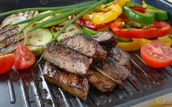
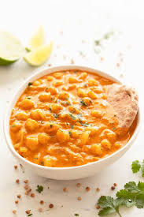
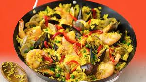
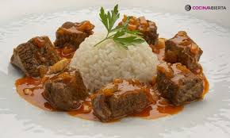

Lunes: Ensalada César

Una ensalada fresca y deliciosa para empezar la semana.
Ingredientes:
- Lechuga romana
- Pollo a la parrilla
- Croutons
- Aderezo César
- Queso parmesano
Preparación:
Corta la lechuga en trozos y ponla en un tazón grande. Añade el pollo a la parrilla en trozos, los croutons y el queso parmesano. Vierte el aderezo César y mezcla bien. Sirve y disfruta.
Martes: Filete de Res a la Parrilla con Verduras
Un filete de res jugoso y sabroso, acompañado de verduras asadas.
Ingredientes:
- Filetes de res (150g cada uno)
- Pimientos rojos
- Calabacines
- Ajo en polvo
- Pimienta negra
- Sal al gusto
- Aceite de oliva
- Romero fresco
Preparación:
Condimenta los filetes de res con sal, pimienta y ajo en polvo. Asa los filetes en una parrilla o sartén a fuego alto durante 3-4 minutos por cada lado, o hasta el punto de cocción deseado. Mientras tanto, corta las verduras en tiras y saltéalas en una sartén con aceite de oliva y romero fresco. Sirve el filete acompañado de las verduras asadas.
Miércoles: Tacos de Pollo
Un plato mexicano con un toque picante y sabroso.
Ingredientes:
- Pechuga de pollo
- Tortillas de maíz
- Aguacate
- Cebolla morada
- Salsa picante
- Cilantro
Preparación:
Corta la pechuga de pollo en tiras y cocínalas en una sartén con un poco de aceite hasta que estén doradas. Calienta las tortillas de maíz y arma los tacos con el pollo, aguacate, cebolla morada, cilantro y salsa picante.
Jueves: Curry de Garbanzos
Un curry vegetariano con especias exóticas y delicioso sabor.
Ingredientes:
- Garbanzos cocidos
- Cebolla
- Ajo
- Curry en polvo
- Coco rallado
- Espinacas
Preparación:
Sofríe la cebolla y el ajo hasta que estén dorados, luego agrega el curry en polvo. Añade los garbanzos cocidos y un poco de agua, y deja cocinar a fuego lento. Incorpora el coco rallado y las espinacas, cocina por unos minutos más y sirve caliente.
Viernes: Paella de Mariscos
Una paella con mariscos frescos, ideal para el fin de semana.
Ingredientes:
- Arroz
- Mariscos (calamares, camarones, mejillones)
- Pimiento rojo
- Tomates
- Ajo
- Aceite de oliva
Preparación:
En una paellera, sofríe el ajo y el pimiento. Agrega los tomates picados y luego el arroz. Añade caldo de mariscos y los mariscos. Cocina a fuego medio hasta que el arroz esté listo. Sirve caliente y disfruta.
Sabado: Arroz con Carne Guisada
Un plato lleno de sabor y tradición, con arroz esponjoso y carne guisada en una deliciosa salsa.
Ingredientes:
- 500g de carne guisada (de res o cerdo)
- 1 Cebolla mediana, picada
- 2 Dientes de ajo, picados
- 1 Tomate maduro, picado
- 1 Pimiento verde, picado
- 2 Tazas de arroz
- 4 Tazas de caldo de carne o agua
- 1 Hoja de laurel
- 1/2 Taza de guisantes verdes (opcional)
- 1 Zanahoria, pelada y cortada en cubos pequeños
- Aceite de oliva o vegetal
- Sal y pimienta al gusto
Preparación:
1. En una sartén grande o cazuela, calienta un poco de aceite y sofríe la cebolla, el ajo, el pimiento verde y el tomate hasta que estén bien cocidos y fragantes.
2. Agrega la carne guisada y cocina por unos minutos hasta que se dore un poco. Añade la zanahoria, el laurel, sal y pimienta al gusto. Remueve bien.
3. Incorpora el caldo de carne (o agua) y lleva la mezcla a ebullición. Reduce el fuego y cocina a fuego lento durante unos 20-25 minutos para que la carne se ablande y los sabores se mezclen.
4. En otra olla, cocina el arroz con agua y sal (siguiendo las instrucciones del paquete). Cuando esté listo, agrega el arroz cocido a la sartén con la carne guisada y mezcla bien para que se integren todos los sabores.
5. Si lo deseas, agrega guisantes verdes o más verduras a la mezcla y cocina por unos minutos más. Sirve caliente.
Domingo: Pollo en Salsa de Mostaza y Miel
Un delicioso plato de pollo con una salsa dulce y picante a base de mostaza y miel.
Ingredientes:
- 4 Pechugas de pollo
- 2 Cucharadas de mostaza Dijon
- 2 Cucharadas de miel
- 1 Cucharada de vinagre balsámico
- 1 Cucharadita de ajo en polvo
- Sal y pimienta al gusto
- Aceite de oliva
Preparación:
En un tazón pequeño, mezcla la mostaza, miel, vinagre balsámico, ajo en polvo, sal y pimienta. En una sartén grande, calienta un poco de aceite de oliva y cocina las pechugas de pollo a fuego medio-alto durante 5-6 minutos por cada lado, o hasta que estén bien cocidas. Vierte la salsa de mostaza y miel sobre el pollo y cocina a fuego lento durante 3-4 minutos, hasta que la salsa espese. Sirve caliente, acompañando con arroz o ensalada.
Filete de Pescado Frito con Patacones o Yuca

Un delicioso filete de pescado frito acompañado de patacones crujientes o yuca frita. ¡El plato perfecto para una comida completa!
Ingredientes:
- 4 Filetes de pescado blanco (tilapia, mero, o el pescado de tu preferencia)
- 1 Limón
- 2 Dientes de ajo picados
- Sal y pimienta al gusto
- Harina de trigo (para empanizar)
- Aceite vegetal (para freír)
- 2 Plátanos verdes (para los patacones) o 500g de yuca (para la yuca frita)
- Sal al gusto
- Aceite vegetal (para freír los patacones o la yuca)
Preparación:
Para el Filete de Pescado Frito:
1. Exprime el jugo de limón sobre los filetes de pescado y sazónalos con sal, pimienta y el ajo picado. Deja marinar durante 10-15 minutos para que el pescado tome sabor.
2. En un plato, coloca una capa de harina de trigo. Pasa cada filete de pescado por la harina, cubriéndolo bien por ambos lados.
3. En una sartén grande, calienta el aceite a fuego medio-alto. Cuando esté bien caliente, coloca los filetes de pescado y fríelos durante 3-4 minutos por cada lado, o hasta que estén dorados y crujientes. Retira del aceite y coloca sobre papel absorbente para eliminar el exceso de grasa.
Para los Patacones (Tostones):
1. Pela los plátanos verdes y córtalos en rodajas de aproximadamente 2-3 cm de grosor.
2. En una sartén grande, calienta suficiente aceite para freír. Fría las rodajas de plátano durante 2-3 minutos por cada lado, hasta que estén doradas pero no completamente cocidas.
3. Retira las rodajas de plátano y colócalas en una tabla. Con la ayuda de un plato o un utensilio plano, aplánalas para darles forma de "tostón".
4. Vuelve a colocar los patacones en la sartén y fríelos por 1-2 minutos más hasta que estén crujientes. Sazona con sal al gusto.
Para la Yuca Frita (si prefieres yuca en lugar de patacones):
1. Pela la yuca y córtala en trozos grandes.
2. Cocina la yuca en agua con sal durante 20-25 minutos o hasta que esté suave y cocida.
3. Luego, en una sartén con aceite caliente, fríe la yuca durante 3-4 minutos hasta que esté dorada y crujiente. Sazona con sal al gusto.
Montaje del Plato:
Coloca los filetes de pescado frito en un plato grande. Acompáñalos con los patacones crujientes o la yuca frita. Puedes servirlos con una rodaja de limón y una salsa tártara o salsa de ajo para acompañar.